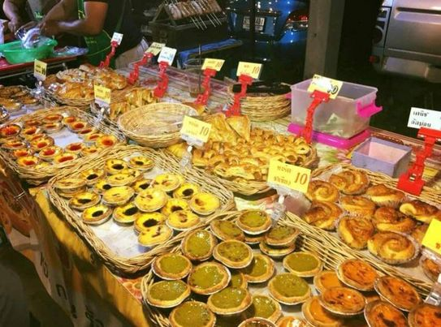
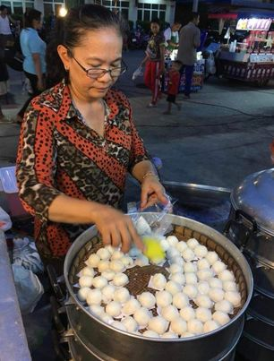
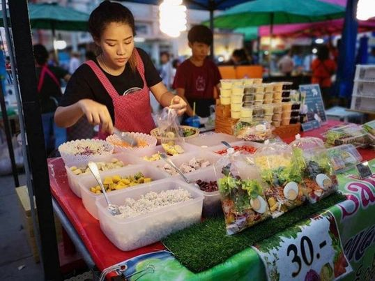

ทาร์ตไข่ร้านพี่นุ่นคืออร่อยมาก เนื้อทาร์ตกรอบ เนื้อข้างในก็สุกกำลังดีที่สำคัญราคาชิ้นละเเค่ 10บาท!! ไม่มาก็ถือว่าพลาดแล้วมั้ยคะ มาซื้อทานกันได้ที่ร้านทาร์ตไข่พี่นุ่น พิกัด ตลาดคลองถมค่าา

ป้าต้อยขายเป็นซาลาเปาลูกจิ๋วทานง่ายทานสะดวกรสชาติอร่อย ราคาจับต้องได้ลูกละ2บาท แป้งนุ่ม ไส้ข้างในก็อร่อย ไส้ที่ป้าต้อยขายมี ไส้ถั่วดำเเละไส้หมู ที่สำคัญคืออร่อยมาก อยากให้ไปหาลองทานกันดู

ร้านนี้เอาใจสายสุขภาพนะคะร้านพี่บัวขายพวกสลัด สายเฮลตี้สุดๆ มีผักผลไม้ให้เลือกเองตามใจชอบ เเละร้านพี่แกมีน้ำสลัดให้เลือกถึง6รสด้วยกัน มีรสออริจินอล วาซาบิ งาดำ ซอสญี่ปุ่น ซอสอโวคาโด้เเละอย่างสุดท้ายคือซอสที่พี่บัวเป็นคนทำเองค่ะ ให้เยอะจุกๆขนาดนี้ราคา 30 บาทเท่านั้นค่ะ ที่สำคัญคือรสชาติอร่อยทานง่าย อยากหาของกินอะไรอร่อยๆมาได้ที่ตลาดคลองถมนะคะ